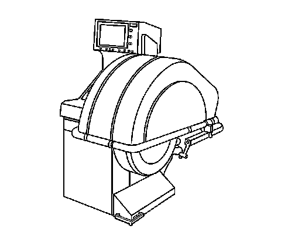
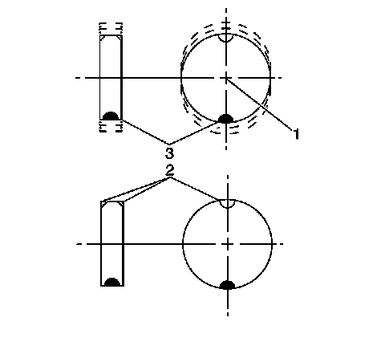
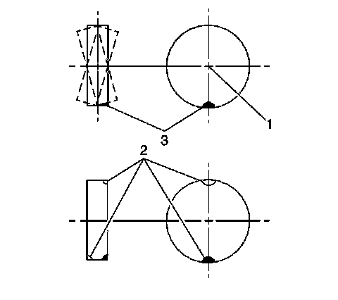
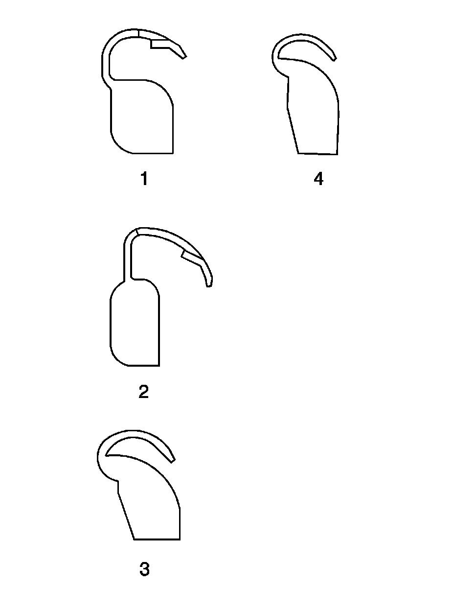
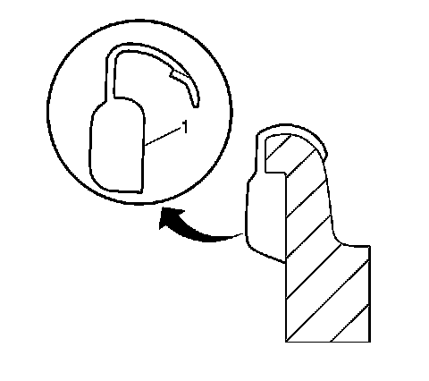
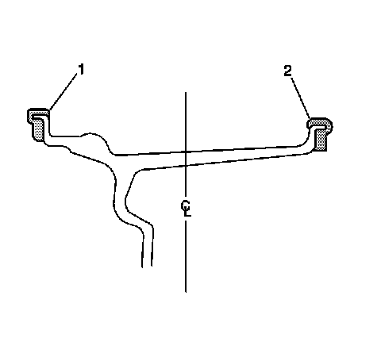
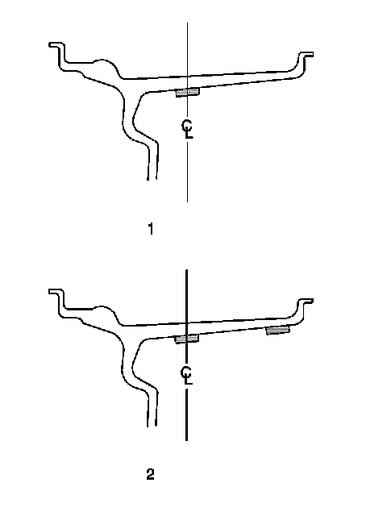

Tire and Wheel Assembly Balancing - Off Vehicle
Tire and Wheel Assembly Balancing - Off Vehicle
Caution: Failure to adhere to the following precautions before tire balancing can result in personal injury or damage to components:
* Clean away any dirt or deposits from the inside of the wheels.
* Remove any stones from the tread.
* Wear eye protection.
* Use coated weights on aluminum wheels.
Tire and Wheel Assembly Balancer Calibration
Tire and wheel balancers can drift out of calibration over time, or can become inaccurate as a result of heavy use. There will likely not be any visual evidence that a calibration problem exists. If a balancer is not calibrated within specifications, and a tire and wheel assembly is balanced on that machine, the assembly may actually be imbalanced.
Tire and wheel assembly balancer calibration should be checked approximately every 2 weeks, if the machine is used frequently, and/or whenever the balance readings are questionable.
Tire and Wheel Assembly Balancer Calibration Test
Important: If the balancer fails any of the steps in this calibration test, the balancer should be calibrated according to the manufacturer's instructions. If the balancer cannot be calibrated, contact the manufacturer for assistance.
Check the calibration of the tire and wheel assembly balancer according to the manufacturer's recommendations, or perform the following test.

1. Spin the balancer without a wheel or any of the adapters on the shaft.
2. Inspect the balancer readings.
Zero within 7 g (1/4 oz)
3. If the balancer is within the specification range, balance a tire and wheel assembly - that is within radial and lateral runout tolerances - to ZERO, using the same balancer.
4. After the tire and wheel assembly has been balanced, add an 85 g (3 oz) test weight to the wheel at any location.
5. Spin the tire and wheel assembly again. Note the readings.
* In the static and dynamic modes, the balancer should call for 85 g (3 oz) of weight, 180 degrees opposite the test weight.
* In the dynamic mode, the weight should be called for on the flange of the wheel opposite the test weight.
6. With the assembly imbalanced to 85 g (3 oz), cycle the balancer 5 times.
7. Inspect the balancer readings:
Maximum variation: 7 g (1/4 oz)
8. Index the tire and wheel assembly on the balancer shaft, 90 degrees from the previous location.
9. Cycle the balancer with the assembly at the new location.
10. Inspect the balancer readings:
Maximum variation: 7 g (1/4 oz)
11. Repeat steps 8 through 10 until the tire and wheel assembly has been cycled and checked at each of the 4 locations on the balancer shaft.
Tire and Wheel Assembly Balancing Guidelines
Important: Tire and wheel assemblies which exhibit excessive runout can produce vibrations even if the assemblies are balanced.
It is strongly recommended that the tire and wheel assembly runout be measured and corrected if necessary BEFORE the assemblies are balanced.
If the runout of the tire and wheel assemblies has not yet been measured, refer to Tire and Wheel Assembly Runout Measurement - Off Vehicle (Tire and Wheel Assembly Runout Measurement - Off Vehicle) before proceeding.
There are 2 types of tire and wheel balance:
Static Balance

Static balance is the equal distribution of weight around the wheel circumference. The wheel balance weights (2) are positioned on the wheel in order to offset the effects of a heavy spot (3). Wheels that have static imbalance can produce a bouncing action called tramp.
Dynamic Balance

Dynamic balance is the equal distribution of weight on each side of the tire and wheel assembly centerline. The wheel balance weights (2) are positioned on the wheel in order to offset the effects of a heavy spot (3). Wheels that have dynamic imbalance have a tendency to move from side to side and can cause an action called shimmy.
Most off-vehicle balancers are capable of checking both types of balance simultaneously.
As a general rule, most vehicles are more sensitive to static imbalance than to dynamic imbalance; however, vehicles equipped with low profile, wide tread path, high performance tires and wheels are susceptible to small amounts of dynamic imbalance. As little as 14-21 g (1/2-3/4 oz) imbalance is capable of inducing a vibration in some vehicle models.
Balancing Procedure
Important: When balancing tire and wheel assemblies, use a known good, recently calibrated, off-vehicle, two-plane dynamic balancer set to the finest balance mode available.
1. Raise and support the vehicle. Refer to Lifting and Jacking the Vehicle (Service and Repair) .
2. Mark the location of the wheels to the wheel studs and mark the specific vehicle position on each tire and wheel - LF, LR, RF, RR.
3. Remove the tire and wheel assemblies one at a time and mount on a spin-type wheel balancer. Refer to Tire and Wheel Removal and Installation (Service and Repair) .
4. Carefully follow the wheel balancer manufacturer's instructions for proper mounting techniques to be used on different types of wheels.
Regard aftermarket wheels, especially those incorporating universal lug patterns, as potential sources of runout and mounting concerns.
5. Be sure to use the correct type of wheel balance weights for the type of wheel rim being balanced. Be sure to use the correct type of coated wheel balance weights on aluminum wheels. Refer to Wheel Weight Usage.
6. Balance all four tire and wheel assemblies as close to zero as possible.
7. Using the matchmarks made prior to removal, install the tire and wheel assemblies to the vehicle. Refer to Tire and Wheel Removal and Installation (Service and Repair) .
8. Lower the vehicle.
Wheel Weight Usage
Tire and wheel assemblies can be balanced using either the static or dynamic method.
Clip-on Weights

Important: When balancing factory aluminum wheels with clip-on wheel balance weights, be sure to use special polyester-coated weights. These coated weights reduce the potential for corrosion and damage to aluminum wheels.
These coated weights reduce the potential for corrosion and damage to aluminum wheels.
* MC (1) and AW (2) series weights are approved for use on aluminum wheels.
* P (3) series weights are approved for use on steel wheels only.
* T (4) series coated weights are approved for use on both steel and aluminum wheels.

Important: Use a nylon or plastic-tipped hammer when installing coated clip-on wheel balance weights to minimize the possibility of damage to the polyester coating.
The contour and style of the wheel rim flange will determine which type of clip-on wheel weight (1) should be used. The weight should follow the contour of the rim flange. The weight clip should firmly grip the rim flange.
Wheel Weight Placement - Clip-on Weights

When static balancing, locate the wheel balance weights on the inboard flange (2) if only 28 g (1 oz) or less is called for. If more than 28 g (1 oz) is called for, split the weights as equally as possible between the inboard (2) and outboard (1) flanges.
When dynamic balancing, locate the wheel balance weights on the inboard (2) and outboard (1) rim flanges at the positions specified by the wheel balancer.
Adhesive Weights

Important: When installing adhesive balance weights on flangeless wheels, do NOT install the weight on the outboard surface of the rim.
Adhesive wheel balance weights may be used on factory aluminum wheels. Perform the following procedure to install adhesive wheel balance weights.
1. Determine the correct areas for placement of the wheel weights on the wheel.
* When static balancing, locate the wheel balance weights along the wheel centerline (1) on the inner wheel surface if only 28 g (1 oz) or less is called for. If more than 28 g (1 oz) is called for, split the weights as equally as possible between the wheel centerline and the inboard edge of the inner wheel surface (2).
* When dynamic balancing, locate the wheel balance weights along the wheel centerline and the inboard edge of the inner wheel surface (2) at the positions specified by the wheel balancer.
2. Ensure that there is sufficient clearance between the wheel weights and brake system components.
Important: Do not use abrasives to clean any surface of the wheel.
3. Using a clean cloth or paper towel with a general purpose cleaner, thoroughly clean the designated balance weight attachment areas of any corrosion, overspray, dirt or any other foreign material.
4. To ensure there is no remaining residue, wipe the balance weight attachment areas again, using a clean cloth or paper towel with a mixture of half isopropyl alcohol and half water.
5. Dry the attachment areas with hot air until the wheel surface is warm to the touch.
6. Warm the adhesive backing on the wheel balance weights to room temperature.
7. Remove the protective covering from the adhesive backing on the back of the balance weights. DO NOT touch the adhesive surface.
8. Apply the wheel balance weights to the wheel, press into place with hand pressure.
9. Secure the wheel balance weights to the wheel with a 90 N (21 lb) force applied with a roller.